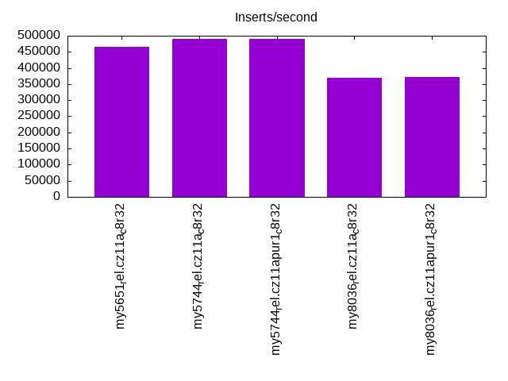
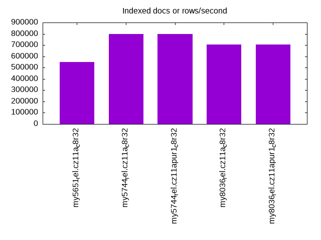
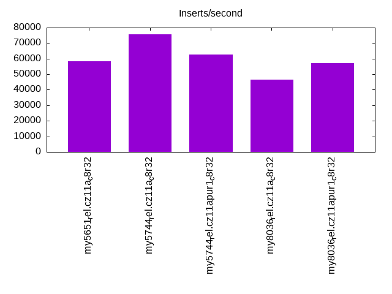
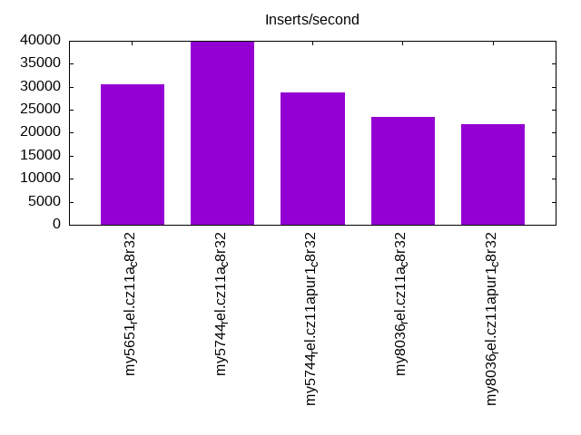
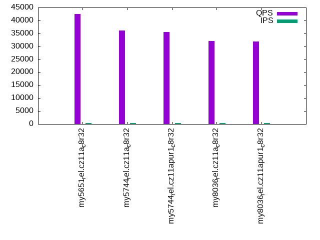
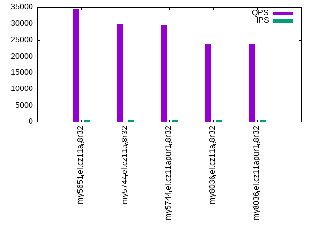
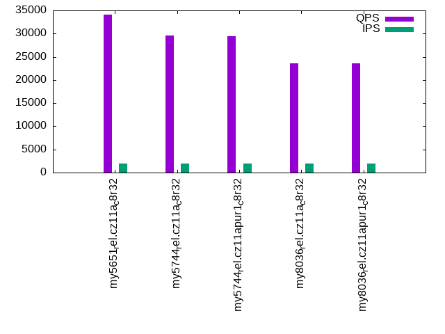
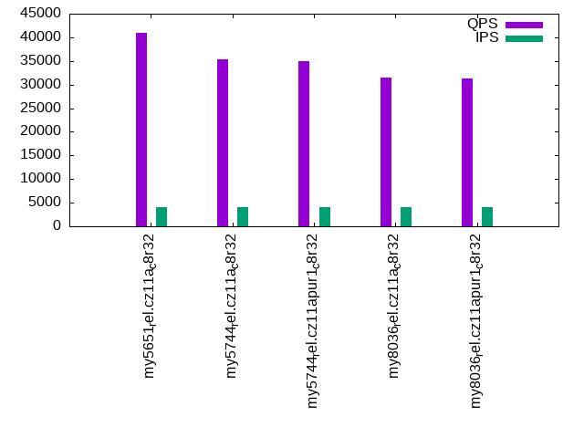
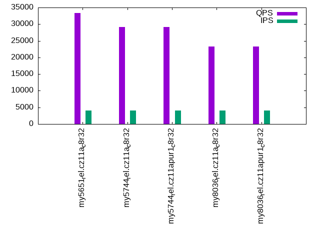

This is a report for the insert benchmark with 48M docs and 4 client(s). It is generated by scripts (bash, awk, sed) and Tufte might not be impressed. An overview of the insert benchmark is here and a short update is here. Below, by DBMS, I mean DBMS+version.config. An example is my8020.c10b40 where my means MySQL, 8020 is version 8.0.20 and c10b40 is the name for the configuration file.
The test server has 8 AMD cores, 32G RAM and an NVMe SSD. It is described here as the ASUS PN53. The benchmark was run with 4 clients and there were 1 or 3 connections per client (1 for queries or inserts without rate limits, 1+1 for rate limited inserts+deletes). It uses 4 tables with a table per client. It loads 12M rows per table without secondary indexes, creates 3 secondary indexes per table, then inserts 40 rows per table with a delete per insert to avoid growing the table. It then does 6 read+write tests for 1800s each that do queries as fast as possible with 100,100,500,500,1000,1000 inserts/s and the same for deletes/s per client concurrent with the queries. The database is cached in memory. Clients and the DBMS share one server. The per-database configs are in the per-database subdirectories here.
The tested DBMS are:
The numbers are inserts/s for l.i0, l.i1 and l.i2, indexed docs (or rows) /s for l.x and queries/s for qr100, qp100 thru qr1000, qp1000" The values are the average rate over the entire test for inserts (IPS) and queries (QPS). The range of values for IPS and QPS is split into 3 parts: bottom 25%, middle 50%, top 25%. Values in the bottom 25% have a red background, values in the top 25% have a green background and values in the middle have no color. A gray background is used for values that can be ignored because the DBMS did not sustain the target insert rate. Red backgrounds are not used when the minimum value is within 80% of the max value.
| dbms | l.i0 | l.x | l.i1 | l.i2 | qr100 | qp100 | qr500 | qp500 | qr1000 | qp1000 |
|---|---|---|---|---|---|---|---|---|---|---|
| my5651_rel.cz11a_c8r32 | 466019 | 551725 | 58129 | 30476 | 42430 | 34548 | 41547 | 34026 | 40904 | 33386 |
| my5744_rel.cz11a_c8r32 | 489796 | 800002 | 75740 | 39950 | 36122 | 29933 | 35848 | 29545 | 35272 | 29187 |
| my5744_rel.cz11apur1_c8r32 | 489796 | 800002 | 62807 | 28725 | 35454 | 29786 | 35200 | 29479 | 34911 | 29085 |
| my8036_rel.cz11a_c8r32 | 369231 | 705884 | 46394 | 23375 | 32064 | 23808 | 31779 | 23541 | 31420 | 23295 |
| my8036_rel.cz11apur1_c8r32 | 372093 | 705884 | 57296 | 21813 | 31955 | 23736 | 31840 | 23571 | 31321 | 23278 |
This table has relative throughput, throughput for the DBMS relative to the DBMS in the first line, using the absolute throughput from the previous table. Values less than 0.95 have a yellow background. Values greater than 1.05 have a blue background.
| dbms | l.i0 | l.x | l.i1 | l.i2 | qr100 | qp100 | qr500 | qp500 | qr1000 | qp1000 |
|---|---|---|---|---|---|---|---|---|---|---|
| my5651_rel.cz11a_c8r32 | 1.00 | 1.00 | 1.00 | 1.00 | 1.00 | 1.00 | 1.00 | 1.00 | 1.00 | 1.00 |
| my5744_rel.cz11a_c8r32 | 1.05 | 1.45 | 1.30 | 1.31 | 0.85 | 0.87 | 0.86 | 0.87 | 0.86 | 0.87 |
| my5744_rel.cz11apur1_c8r32 | 1.05 | 1.45 | 1.08 | 0.94 | 0.84 | 0.86 | 0.85 | 0.87 | 0.85 | 0.87 |
| my8036_rel.cz11a_c8r32 | 0.79 | 1.28 | 0.80 | 0.77 | 0.76 | 0.69 | 0.76 | 0.69 | 0.77 | 0.70 |
| my8036_rel.cz11apur1_c8r32 | 0.80 | 1.28 | 0.99 | 0.72 | 0.75 | 0.69 | 0.77 | 0.69 | 0.77 | 0.70 |
This lists the average rate of inserts/s for the tests that do inserts concurrent with queries. For such tests the query rate is listed in the table above. The read+write tests are setup so that the insert rate should match the target rate every second. Cells that are not at least 95% of the target have a red background to indicate a failure to satisfy the target.
| dbms | qr100.L1 | qp100.L2 | qr500.L3 | qp500.L4 | qr1000.L5 | qp1000.L6 |
|---|---|---|---|---|---|---|
| my5651_rel.cz11a_c8r32 | 399 | 399 | 1994 | 1994 | 3989 | 3989 |
| my5744_rel.cz11a_c8r32 | 399 | 399 | 1994 | 1994 | 3989 | 3989 |
| my5744_rel.cz11apur1_c8r32 | 399 | 399 | 1994 | 1994 | 3987 | 3989 |
| my8036_rel.cz11a_c8r32 | 399 | 399 | 1994 | 1994 | 3989 | 3989 |
| my8036_rel.cz11apur1_c8r32 | 399 | 399 | 1993 | 1994 | 3989 | 3989 |
| target | 400 | 400 | 2000 | 2000 | 4000 | 4000 |
l.i0: load without secondary indexes. Graphs for performance per 1-second interval are here.
Average throughput:
Insert response time histogram: each cell has the percentage of responses that take <= the time in the header and max is the max response time in seconds. For the max column values in the top 25% of the range have a red background and in the bottom 25% of the range have a green background. The red background is not used when the min value is within 80% of the max value.
| dbms | 256us | 1ms | 4ms | 16ms | 64ms | 256ms | 1s | 4s | 16s | gt | max |
|---|---|---|---|---|---|---|---|---|---|---|---|
| my5651_rel.cz11a_c8r32 | 96.565 | 3.342 | 0.021 | 0.066 | 0.006 | 0.162 | |||||
| my5744_rel.cz11a_c8r32 | 97.747 | 1.918 | 0.279 | 0.050 | 0.006 | 0.159 | |||||
| my5744_rel.cz11apur1_c8r32 | 97.703 | 1.965 | 0.273 | 0.053 | 0.006 | 0.167 | |||||
| my8036_rel.cz11a_c8r32 | 97.057 | 2.472 | 0.372 | 0.091 | 0.007 | 0.146 | |||||
| my8036_rel.cz11apur1_c8r32 | 97.095 | 2.449 | 0.361 | 0.086 | 0.010 | 0.144 |
Performance metrics for the DBMS listed above. Some are normalized by throughput, others are not. Legend for results is here.
ips qps rps rmbps wps wmbps rpq rkbpq wpi wkbpi csps cpups cspq cpupq dbgb1 dbgb2 rss maxop p50 p99 tag 466019 0 3805 14.9 1425.2 121.6 0.008 0.033 0.003 0.267 55973 67.7 0.120 12 3.2 33.7 4.3 0.162 130361 109682 my5651_rel.cz11a_c8r32 489796 0 0 0.0 1537.7 128.7 0.000 0.000 0.003 0.269 46624 71.0 0.095 12 3.2 33.7 4.9 0.159 141284 116876 my5744_rel.cz11a_c8r32 489796 0 0 0.0 1531.9 128.3 0.000 0.000 0.003 0.268 46410 70.8 0.095 12 3.2 33.7 4.8 0.167 140458 118371 my5744_rel.cz11apur1_c8r32 369231 0 0 0.0 1497.7 109.3 0.000 0.000 0.004 0.303 39456 64.2 0.107 14 3.2 33.8 5.1 0.146 102691 87330 my8036_rel.cz11a_c8r32 372093 0 0 0.0 1495.7 109.1 0.000 0.000 0.004 0.300 39412 64.1 0.106 14 3.2 33.8 5.1 0.144 103990 75168 my8036_rel.cz11apur1_c8r32
l.x: create secondary indexes.
Average throughput:
Performance metrics for the DBMS listed above. Some are normalized by throughput, others are not. Legend for results is here.
ips qps rps rmbps wps wmbps rpq rkbpq wpi wkbpi csps cpups cspq cpupq dbgb1 dbgb2 rss maxop p50 p99 tag 551725 0 55 0.2 8061.6 548.5 0.000 0.000 0.015 1.018 13919 40.5 0.025 6 6.7 37.2 6.8 0.001 NA NA my5651_rel.cz11a_c8r32 800002 0 0 0.0 14094.1 731.7 0.000 0.000 0.018 0.937 51669 44.0 0.065 4 7.3 37.8 8.8 0.002 NA NA my5744_rel.cz11a_c8r32 800002 0 0 0.0 14165.1 733.1 0.000 0.000 0.018 0.938 51596 43.3 0.064 4 7.3 37.8 8.8 0.002 NA NA my5744_rel.cz11apur1_c8r32 705884 0 3782 236.6 11907.1 730.1 0.005 0.343 0.017 1.059 34102 89.8 0.048 10 7.3 37.9 7.6 0.004 NA NA my8036_rel.cz11a_c8r32 705884 0 3774 236.1 12784.3 744.9 0.005 0.342 0.018 1.081 35942 89.6 0.051 10 7.3 37.9 7.7 0.004 NA NA my8036_rel.cz11apur1_c8r32
l.i1: continue load after secondary indexes created with 50 inserts per transaction. Graphs for performance per 1-second interval are here.
Average throughput:
Insert response time histogram: each cell has the percentage of responses that take <= the time in the header and max is the max response time in seconds. For the max column values in the top 25% of the range have a red background and in the bottom 25% of the range have a green background. The red background is not used when the min value is within 80% of the max value.
| dbms | 256us | 1ms | 4ms | 16ms | 64ms | 256ms | 1s | 4s | 16s | gt | max |
|---|---|---|---|---|---|---|---|---|---|---|---|
| my5651_rel.cz11a_c8r32 | 0.029 | 81.084 | 18.177 | 0.699 | 0.010 | 0.099 | |||||
| my5744_rel.cz11a_c8r32 | 0.002 | 87.751 | 12.122 | 0.120 | 0.006 | 0.169 | |||||
| my5744_rel.cz11apur1_c8r32 | 0.009 | 96.160 | 3.287 | 0.048 | 0.139 | 0.358 | 0.276 | ||||
| my8036_rel.cz11a_c8r32 | 90.062 | 7.846 | 0.200 | 1.891 | 0.217 | ||||||
| my8036_rel.cz11apur1_c8r32 | 95.412 | 2.933 | 0.134 | 1.520 | 0.141 |
Delete response time histogram: each cell has the percentage of responses that take <= the time in the header and max is the max response time in seconds. For the max column values in the top 25% of the range have a red background and in the bottom 25% of the range have a green background. The red background is not used when the min value is within 80% of the max value.
| dbms | 256us | 1ms | 4ms | 16ms | 64ms | 256ms | 1s | 4s | 16s | gt | max |
|---|---|---|---|---|---|---|---|---|---|---|---|
| my5651_rel.cz11a_c8r32 | 2.143 | 84.284 | 13.006 | 0.559 | 0.008 | 0.103 | |||||
| my5744_rel.cz11a_c8r32 | 3.227 | 84.999 | 11.676 | 0.092 | 0.005 | 0.168 | |||||
| my5744_rel.cz11apur1_c8r32 | 4.975 | 91.111 | 3.376 | 0.041 | 0.233 | 0.264 | 0.275 | ||||
| my8036_rel.cz11a_c8r32 | 8.039 | 82.425 | 7.593 | 0.149 | 1.794 | 0.217 | |||||
| my8036_rel.cz11apur1_c8r32 | 14.134 | 81.348 | 2.928 | 0.108 | 1.483 | 0.140 |
Performance metrics for the DBMS listed above. Some are normalized by throughput, others are not. Legend for results is here.
ips qps rps rmbps wps wmbps rpq rkbpq wpi wkbpi csps cpups cspq cpupq dbgb1 dbgb2 rss maxop p50 p99 tag 58129 0 1645 6.4 4451.0 182.4 0.028 0.113 0.077 3.214 51487 70.6 0.886 97 10.7 41.2 12.3 0.099 14884 9440 my5651_rel.cz11a_c8r32 75740 0 0 0.0 5643.9 231.9 0.000 0.000 0.075 3.135 35992 84.7 0.475 89 10.9 41.4 13.0 0.169 19229 14141 my5744_rel.cz11a_c8r32 62807 0 0 0.0 4239.4 154.2 0.000 0.000 0.067 2.515 29704 57.5 0.473 73 14.4 46.4 17.7 0.276 22575 150 my5744_rel.cz11apur1_c8r32 46394 0 84 1.3 5139.4 193.7 0.002 0.029 0.111 4.276 30534 50.3 0.658 87 9.8 40.4 12.0 0.217 11537 6443 my8036_rel.cz11a_c8r32 57296 0 104 1.6 4548.7 154.1 0.002 0.029 0.079 2.754 29265 52.8 0.511 74 13.0 44.9 15.9 0.141 14284 7492 my8036_rel.cz11apur1_c8r32
l.i2: continue load after secondary indexes created with 5 inserts per transaction. Graphs for performance per 1-second interval are here.
Average throughput:
Insert response time histogram: each cell has the percentage of responses that take <= the time in the header and max is the max response time in seconds. For the max column values in the top 25% of the range have a red background and in the bottom 25% of the range have a green background. The red background is not used when the min value is within 80% of the max value.
| dbms | 256us | 1ms | 4ms | 16ms | 64ms | 256ms | 1s | 4s | 16s | gt | max |
|---|---|---|---|---|---|---|---|---|---|---|---|
| my5651_rel.cz11a_c8r32 | 8.936 | 79.310 | 11.044 | 0.662 | 0.046 | 0.001 | 0.095 | ||||
| my5744_rel.cz11a_c8r32 | 20.541 | 75.139 | 3.514 | 0.804 | 0.003 | nonzero | 0.068 | ||||
| my5744_rel.cz11apur1_c8r32 | 20.334 | 77.406 | 0.748 | 0.683 | 0.828 | 0.001 | 0.163 | ||||
| my8036_rel.cz11a_c8r32 | 0.611 | 96.080 | 2.476 | 0.487 | 0.003 | 0.344 | 0.127 | ||||
| my8036_rel.cz11apur1_c8r32 | 0.692 | 93.547 | 3.684 | 1.784 | 0.007 | 0.286 | 0.130 |
Delete response time histogram: each cell has the percentage of responses that take <= the time in the header and max is the max response time in seconds. For the max column values in the top 25% of the range have a red background and in the bottom 25% of the range have a green background. The red background is not used when the min value is within 80% of the max value.
| dbms | 256us | 1ms | 4ms | 16ms | 64ms | 256ms | 1s | 4s | 16s | gt | max |
|---|---|---|---|---|---|---|---|---|---|---|---|
| my5651_rel.cz11a_c8r32 | 11.800 | 75.971 | 11.524 | 0.658 | 0.045 | 0.001 | 0.094 | ||||
| my5744_rel.cz11a_c8r32 | 21.990 | 73.798 | 3.407 | 0.803 | 0.002 | nonzero | 0.068 | ||||
| my5744_rel.cz11apur1_c8r32 | 21.445 | 76.315 | 0.731 | 0.681 | 0.828 | 0.001 | 0.163 | ||||
| my8036_rel.cz11a_c8r32 | 3.392 | 93.422 | 2.354 | 0.488 | 0.003 | 0.341 | 0.127 | ||||
| my8036_rel.cz11apur1_c8r32 | 1.876 | 92.393 | 3.657 | 1.781 | 0.007 | 0.285 | 0.130 |
Performance metrics for the DBMS listed above. Some are normalized by throughput, others are not. Legend for results is here.
ips qps rps rmbps wps wmbps rpq rkbpq wpi wkbpi csps cpups cspq cpupq dbgb1 dbgb2 rss maxop p50 p99 tag 30476 0 4984 19.5 2705.1 104.3 0.164 0.654 0.089 3.505 116735 80.0 3.830 210 10.7 41.2 12.3 0.095 7559 6853 my5651_rel.cz11a_c8r32 39950 0 0 0.0 3408.6 134.2 0.000 0.000 0.085 3.441 122348 82.8 3.063 166 10.9 41.4 13.0 0.068 10052 9440 my5744_rel.cz11a_c8r32 28725 0 0 0.0 3475.8 126.3 0.000 0.000 0.121 4.504 87943 61.6 3.062 172 14.4 46.4 17.9 0.163 10149 185 my5744_rel.cz11apur1_c8r32 23375 0 0 0.0 2846.3 101.4 0.000 0.000 0.122 4.443 79709 50.9 3.410 174 9.8 40.4 12.0 0.127 5806 3536 my8036_rel.cz11a_c8r32 21813 0 0 0.0 3167.2 108.3 0.000 0.000 0.145 5.086 76001 50.6 3.484 186 13.0 44.9 16.1 0.130 5932 909 my8036_rel.cz11apur1_c8r32
qr100.L1: range queries with 100 insert/s per client. Graphs for performance per 1-second interval are here.
Average throughput:
Query response time histogram: each cell has the percentage of responses that take <= the time in the header and max is the max response time in seconds. For max values in the top 25% of the range have a red background and in the bottom 25% of the range have a green background. The red background is not used when the min value is within 80% of the max value.
| dbms | 256us | 1ms | 4ms | 16ms | 64ms | 256ms | 1s | 4s | 16s | gt | max |
|---|---|---|---|---|---|---|---|---|---|---|---|
| my5651_rel.cz11a_c8r32 | 99.964 | 0.025 | 0.004 | 0.008 | nonzero | 0.019 | |||||
| my5744_rel.cz11a_c8r32 | 99.996 | 0.004 | nonzero | nonzero | 0.010 | ||||||
| my5744_rel.cz11apur1_c8r32 | 99.997 | 0.003 | nonzero | nonzero | 0.010 | ||||||
| my8036_rel.cz11a_c8r32 | 99.973 | 0.027 | nonzero | 0.004 | |||||||
| my8036_rel.cz11apur1_c8r32 | 99.970 | 0.030 | nonzero | 0.002 |
Insert response time histogram: each cell has the percentage of responses that take <= the time in the header and max is the max response time in seconds. For max values in the top 25% of the range have a red background and in the bottom 25% of the range have a green background. The red background is not used when the min value is within 80% of the max value.
| dbms | 256us | 1ms | 4ms | 16ms | 64ms | 256ms | 1s | 4s | 16s | gt | max |
|---|---|---|---|---|---|---|---|---|---|---|---|
| my5651_rel.cz11a_c8r32 | 0.069 | 66.750 | 32.743 | 0.438 | 0.028 | ||||||
| my5744_rel.cz11a_c8r32 | 0.125 | 98.104 | 1.757 | 0.014 | 0.019 | ||||||
| my5744_rel.cz11apur1_c8r32 | 0.160 | 99.500 | 0.340 | 0.011 | |||||||
| my8036_rel.cz11a_c8r32 | 99.514 | 0.479 | 0.007 | 0.023 | |||||||
| my8036_rel.cz11apur1_c8r32 | 99.542 | 0.451 | 0.007 | 0.102 |
Delete response time histogram: each cell has the percentage of responses that take <= the time in the header and max is the max response time in seconds. For max values in the top 25% of the range have a red background and in the bottom 25% of the range have a green background. The red background is not used when the min value is within 80% of the max value.
| dbms | 256us | 1ms | 4ms | 16ms | 64ms | 256ms | 1s | 4s | 16s | gt | max |
|---|---|---|---|---|---|---|---|---|---|---|---|
| my5651_rel.cz11a_c8r32 | 15.604 | 54.104 | 30.056 | 0.236 | 0.023 | ||||||
| my5744_rel.cz11a_c8r32 | 67.812 | 30.764 | 1.389 | 0.035 | 0.021 | ||||||
| my5744_rel.cz11apur1_c8r32 | 66.132 | 33.576 | 0.292 | 0.011 | |||||||
| my8036_rel.cz11a_c8r32 | 41.924 | 57.667 | 0.403 | 0.007 | 0.022 | ||||||
| my8036_rel.cz11apur1_c8r32 | 48.785 | 50.847 | 0.354 | 0.007 | 0.007 | 0.101 |
Performance metrics for the DBMS listed above. Some are normalized by throughput, others are not. Legend for results is here.
ips qps rps rmbps wps wmbps rpq rkbpq wpi wkbpi csps cpups cspq cpupq dbgb1 dbgb2 rss maxop p50 p99 tag 399 42430 13 0.1 547.8 15.5 0.000 0.001 1.374 39.716 163303 51.3 3.849 97 10.7 41.2 12.3 0.019 10600 10069 my5651_rel.cz11a_c8r32 399 36122 0 0.0 567.2 16.0 0.000 0.000 1.422 40.958 139349 52.3 3.858 116 10.9 41.4 13.0 0.010 9030 8918 my5744_rel.cz11a_c8r32 399 35454 0 0.0 516.6 14.7 0.000 0.000 1.295 37.678 136750 52.2 3.857 118 14.4 46.4 17.9 0.010 8838 8711 my5744_rel.cz11apur1_c8r32 399 32064 0 0.0 532.2 13.7 0.000 0.000 1.335 35.064 123880 52.0 3.863 130 9.8 40.4 12.0 0.004 8007 7911 my8036_rel.cz11a_c8r32 399 31955 0 0.0 593.3 15.2 0.000 0.000 1.488 39.012 123691 51.9 3.871 130 13.0 44.9 16.2 0.002 7991 7902 my8036_rel.cz11apur1_c8r32
qp100.L2: point queries with 100 insert/s per client. Graphs for performance per 1-second interval are here.
Average throughput:
Query response time histogram: each cell has the percentage of responses that take <= the time in the header and max is the max response time in seconds. For max values in the top 25% of the range have a red background and in the bottom 25% of the range have a green background. The red background is not used when the min value is within 80% of the max value.
| dbms | 256us | 1ms | 4ms | 16ms | 64ms | 256ms | 1s | 4s | 16s | gt | max |
|---|---|---|---|---|---|---|---|---|---|---|---|
| my5651_rel.cz11a_c8r32 | 99.917 | 0.060 | 0.010 | 0.012 | 0.012 | ||||||
| my5744_rel.cz11a_c8r32 | 99.939 | 0.059 | 0.002 | 0.004 | |||||||
| my5744_rel.cz11apur1_c8r32 | 99.964 | 0.035 | 0.001 | 0.004 | |||||||
| my8036_rel.cz11a_c8r32 | 99.674 | 0.326 | nonzero | 0.003 | |||||||
| my8036_rel.cz11apur1_c8r32 | 99.606 | 0.394 | nonzero | 0.002 |
Insert response time histogram: each cell has the percentage of responses that take <= the time in the header and max is the max response time in seconds. For max values in the top 25% of the range have a red background and in the bottom 25% of the range have a green background. The red background is not used when the min value is within 80% of the max value.
| dbms | 256us | 1ms | 4ms | 16ms | 64ms | 256ms | 1s | 4s | 16s | gt | max |
|---|---|---|---|---|---|---|---|---|---|---|---|
| my5651_rel.cz11a_c8r32 | 52.764 | 47.021 | 0.215 | 0.021 | |||||||
| my5744_rel.cz11a_c8r32 | 99.764 | 0.236 | 0.010 | ||||||||
| my5744_rel.cz11apur1_c8r32 | 0.049 | 99.590 | 0.361 | 0.012 | |||||||
| my8036_rel.cz11a_c8r32 | 99.833 | 0.139 | 0.028 | 0.102 | |||||||
| my8036_rel.cz11apur1_c8r32 | 99.882 | 0.097 | 0.021 | 0.023 |
Delete response time histogram: each cell has the percentage of responses that take <= the time in the header and max is the max response time in seconds. For max values in the top 25% of the range have a red background and in the bottom 25% of the range have a green background. The red background is not used when the min value is within 80% of the max value.
| dbms | 256us | 1ms | 4ms | 16ms | 64ms | 256ms | 1s | 4s | 16s | gt | max |
|---|---|---|---|---|---|---|---|---|---|---|---|
| my5651_rel.cz11a_c8r32 | 3.472 | 49.604 | 46.771 | 0.153 | 0.020 | ||||||
| my5744_rel.cz11a_c8r32 | 47.944 | 51.840 | 0.215 | 0.010 | |||||||
| my5744_rel.cz11apur1_c8r32 | 58.062 | 41.632 | 0.306 | 0.012 | |||||||
| my8036_rel.cz11a_c8r32 | 29.174 | 70.694 | 0.118 | 0.014 | 0.100 | ||||||
| my8036_rel.cz11apur1_c8r32 | 36.618 | 63.264 | 0.097 | 0.021 | 0.023 |
Performance metrics for the DBMS listed above. Some are normalized by throughput, others are not. Legend for results is here.
ips qps rps rmbps wps wmbps rpq rkbpq wpi wkbpi csps cpups cspq cpupq dbgb1 dbgb2 rss maxop p50 p99 tag 399 34548 13 0.1 5.1 0.4 0.000 0.002 0.013 1.127 137610 50.5 3.983 117 10.7 41.2 12.4 0.012 8649 8551 my5651_rel.cz11a_c8r32 399 29933 0 0.0 78.0 2.4 0.000 0.000 0.196 6.092 119292 51.8 3.985 138 10.9 41.4 13.1 0.004 7496 7432 my5744_rel.cz11a_c8r32 399 29786 0 0.0 56.8 1.8 0.000 0.000 0.142 4.592 118727 51.7 3.986 139 14.4 46.4 17.9 0.004 7466 7400 my5744_rel.cz11apur1_c8r32 399 23808 0 0.0 72.0 2.2 0.000 0.000 0.181 5.654 95195 51.3 3.999 172 9.8 40.5 12.0 0.003 5962 5898 my8036_rel.cz11a_c8r32 399 23736 0 0.0 66.6 2.1 0.000 0.000 0.167 5.295 94969 51.2 4.001 173 13.0 44.9 16.2 0.002 5930 5866 my8036_rel.cz11apur1_c8r32
qr500.L3: range queries with 500 insert/s per client. Graphs for performance per 1-second interval are here.
Average throughput:
Query response time histogram: each cell has the percentage of responses that take <= the time in the header and max is the max response time in seconds. For max values in the top 25% of the range have a red background and in the bottom 25% of the range have a green background. The red background is not used when the min value is within 80% of the max value.
| dbms | 256us | 1ms | 4ms | 16ms | 64ms | 256ms | 1s | 4s | 16s | gt | max |
|---|---|---|---|---|---|---|---|---|---|---|---|
| my5651_rel.cz11a_c8r32 | 99.874 | 0.090 | 0.026 | 0.010 | nonzero | 0.029 | |||||
| my5744_rel.cz11a_c8r32 | 99.991 | 0.007 | 0.002 | nonzero | nonzero | 0.018 | |||||
| my5744_rel.cz11apur1_c8r32 | 99.992 | 0.006 | 0.002 | nonzero | 0.014 | ||||||
| my8036_rel.cz11a_c8r32 | 99.973 | 0.022 | 0.004 | 0.001 | 0.016 | ||||||
| my8036_rel.cz11apur1_c8r32 | 99.976 | 0.022 | 0.002 | nonzero | 0.010 |
Insert response time histogram: each cell has the percentage of responses that take <= the time in the header and max is the max response time in seconds. For max values in the top 25% of the range have a red background and in the bottom 25% of the range have a green background. The red background is not used when the min value is within 80% of the max value.
| dbms | 256us | 1ms | 4ms | 16ms | 64ms | 256ms | 1s | 4s | 16s | gt | max |
|---|---|---|---|---|---|---|---|---|---|---|---|
| my5651_rel.cz11a_c8r32 | 0.235 | 68.112 | 31.454 | 0.199 | 0.044 | ||||||
| my5744_rel.cz11a_c8r32 | 4.428 | 93.781 | 1.774 | 0.018 | 0.038 | ||||||
| my5744_rel.cz11apur1_c8r32 | 1.339 | 97.365 | 1.283 | 0.013 | 0.046 | ||||||
| my8036_rel.cz11a_c8r32 | 95.112 | 4.444 | 0.089 | 0.354 | 0.117 | ||||||
| my8036_rel.cz11apur1_c8r32 | 97.496 | 2.297 | 0.043 | 0.164 | 0.107 |
Delete response time histogram: each cell has the percentage of responses that take <= the time in the header and max is the max response time in seconds. For max values in the top 25% of the range have a red background and in the bottom 25% of the range have a green background. The red background is not used when the min value is within 80% of the max value.
| dbms | 256us | 1ms | 4ms | 16ms | 64ms | 256ms | 1s | 4s | 16s | gt | max |
|---|---|---|---|---|---|---|---|---|---|---|---|
| my5651_rel.cz11a_c8r32 | 5.588 | 69.435 | 24.864 | 0.114 | 0.042 | ||||||
| my5744_rel.cz11a_c8r32 | 77.579 | 20.879 | 1.536 | 0.006 | 0.038 | ||||||
| my5744_rel.cz11apur1_c8r32 | 71.565 | 27.158 | 1.274 | 0.003 | 0.022 | ||||||
| my8036_rel.cz11a_c8r32 | 53.146 | 43.228 | 3.263 | 0.058 | 0.306 | 0.110 | |||||
| my8036_rel.cz11apur1_c8r32 | 53.478 | 44.490 | 1.864 | 0.024 | 0.144 | 0.107 |
Performance metrics for the DBMS listed above. Some are normalized by throughput, others are not. Legend for results is here.
ips qps rps rmbps wps wmbps rpq rkbpq wpi wkbpi csps cpups cspq cpupq dbgb1 dbgb2 rss maxop p50 p99 tag 1994 41547 59 0.2 578.6 17.7 0.001 0.006 0.290 9.074 159683 52.5 3.843 101 10.7 41.2 12.4 0.029 10360 9861 my5651_rel.cz11a_c8r32 1994 35848 0 0.0 231.0 8.0 0.000 0.000 0.116 4.103 136333 53.6 3.803 120 10.9 41.4 13.1 0.018 9062 8998 my5744_rel.cz11a_c8r32 1994 35200 0 0.0 241.5 8.3 0.000 0.000 0.121 4.249 134251 53.3 3.814 121 14.4 46.4 17.9 0.014 8775 8695 my5744_rel.cz11apur1_c8r32 1994 31779 0 0.0 341.2 10.7 0.000 0.000 0.171 5.471 121670 53.3 3.829 134 9.8 40.5 12.0 0.016 7960 7896 my8036_rel.cz11a_c8r32 1993 31840 0 0.0 363.8 11.2 0.000 0.000 0.183 5.768 121963 53.1 3.831 133 13.0 44.9 16.2 0.010 7928 7866 my8036_rel.cz11apur1_c8r32
qp500.L4: point queries with 500 insert/s per client. Graphs for performance per 1-second interval are here.
Average throughput:
Query response time histogram: each cell has the percentage of responses that take <= the time in the header and max is the max response time in seconds. For max values in the top 25% of the range have a red background and in the bottom 25% of the range have a green background. The red background is not used when the min value is within 80% of the max value.
| dbms | 256us | 1ms | 4ms | 16ms | 64ms | 256ms | 1s | 4s | 16s | gt | max |
|---|---|---|---|---|---|---|---|---|---|---|---|
| my5651_rel.cz11a_c8r32 | 99.756 | 0.185 | 0.050 | 0.009 | 0.012 | ||||||
| my5744_rel.cz11a_c8r32 | 99.842 | 0.145 | 0.011 | 0.001 | 0.014 | ||||||
| my5744_rel.cz11apur1_c8r32 | 99.878 | 0.107 | 0.013 | 0.001 | nonzero | 0.018 | |||||
| my8036_rel.cz11a_c8r32 | 99.570 | 0.424 | 0.005 | 0.001 | nonzero | 0.017 | |||||
| my8036_rel.cz11apur1_c8r32 | 99.604 | 0.391 | 0.005 | 0.001 | 0.013 |
Insert response time histogram: each cell has the percentage of responses that take <= the time in the header and max is the max response time in seconds. For max values in the top 25% of the range have a red background and in the bottom 25% of the range have a green background. The red background is not used when the min value is within 80% of the max value.
| dbms | 256us | 1ms | 4ms | 16ms | 64ms | 256ms | 1s | 4s | 16s | gt | max |
|---|---|---|---|---|---|---|---|---|---|---|---|
| my5651_rel.cz11a_c8r32 | 0.417 | 72.204 | 27.203 | 0.176 | 0.044 | ||||||
| my5744_rel.cz11a_c8r32 | 2.585 | 96.040 | 1.365 | 0.010 | 0.048 | ||||||
| my5744_rel.cz11apur1_c8r32 | 1.439 | 97.279 | 1.279 | 0.003 | 0.039 | ||||||
| my8036_rel.cz11a_c8r32 | 96.668 | 3.011 | 0.054 | 0.267 | 0.109 | ||||||
| my8036_rel.cz11apur1_c8r32 | 96.722 | 2.944 | 0.033 | 0.300 | 0.108 |
Delete response time histogram: each cell has the percentage of responses that take <= the time in the header and max is the max response time in seconds. For max values in the top 25% of the range have a red background and in the bottom 25% of the range have a green background. The red background is not used when the min value is within 80% of the max value.
| dbms | 256us | 1ms | 4ms | 16ms | 64ms | 256ms | 1s | 4s | 16s | gt | max |
|---|---|---|---|---|---|---|---|---|---|---|---|
| my5651_rel.cz11a_c8r32 | 6.592 | 71.846 | 21.456 | 0.107 | 0.043 | ||||||
| my5744_rel.cz11a_c8r32 | 72.343 | 26.610 | 1.040 | 0.007 | 0.021 | ||||||
| my5744_rel.cz11apur1_c8r32 | 65.576 | 33.346 | 1.071 | 0.007 | 0.039 | ||||||
| my8036_rel.cz11a_c8r32 | 52.786 | 44.825 | 2.138 | 0.019 | 0.232 | 0.112 | |||||
| my8036_rel.cz11apur1_c8r32 | 39.639 | 57.832 | 2.246 | 0.024 | 0.260 | 0.110 |
Performance metrics for the DBMS listed above. Some are normalized by throughput, others are not. Legend for results is here.
ips qps rps rmbps wps wmbps rpq rkbpq wpi wkbpi csps cpups cspq cpupq dbgb1 dbgb2 rss maxop p50 p99 tag 1994 34026 55 0.2 463.7 14.5 0.002 0.006 0.232 7.438 136775 52.0 4.020 122 10.7 41.2 12.3 0.012 8569 8282 my5651_rel.cz11a_c8r32 1994 29545 0 0.0 223.5 7.8 0.000 0.000 0.112 3.999 117746 53.2 3.985 144 10.9 41.4 13.1 0.014 7416 7290 my5744_rel.cz11a_c8r32 1994 29479 0 0.0 236.9 8.1 0.000 0.000 0.119 4.177 117703 52.8 3.993 143 14.4 46.4 17.9 0.018 7386 7304 my5744_rel.cz11apur1_c8r32 1994 23541 0 0.0 315.6 10.1 0.000 0.000 0.158 5.166 94463 52.6 4.013 179 9.8 40.6 12.0 0.017 5883 5818 my8036_rel.cz11a_c8r32 1994 23571 0 0.0 351.4 11.0 0.000 0.000 0.176 5.630 94416 52.5 4.006 178 13.0 45.0 16.2 0.013 5914 5834 my8036_rel.cz11apur1_c8r32
qr1000.L5: range queries with 1000 insert/s per client. Graphs for performance per 1-second interval are here.
Average throughput:
Query response time histogram: each cell has the percentage of responses that take <= the time in the header and max is the max response time in seconds. For max values in the top 25% of the range have a red background and in the bottom 25% of the range have a green background. The red background is not used when the min value is within 80% of the max value.
| dbms | 256us | 1ms | 4ms | 16ms | 64ms | 256ms | 1s | 4s | 16s | gt | max |
|---|---|---|---|---|---|---|---|---|---|---|---|
| my5651_rel.cz11a_c8r32 | 99.770 | 0.191 | 0.034 | 0.005 | nonzero | 0.026 | |||||
| my5744_rel.cz11a_c8r32 | 99.975 | 0.017 | 0.006 | 0.001 | nonzero | 0.023 | |||||
| my5744_rel.cz11apur1_c8r32 | 99.975 | 0.015 | 0.009 | 0.001 | nonzero | 0.023 | |||||
| my8036_rel.cz11a_c8r32 | 99.933 | 0.052 | 0.012 | 0.003 | nonzero | 0.026 | |||||
| my8036_rel.cz11apur1_c8r32 | 99.940 | 0.050 | 0.009 | 0.001 | nonzero | 0.024 |
Insert response time histogram: each cell has the percentage of responses that take <= the time in the header and max is the max response time in seconds. For max values in the top 25% of the range have a red background and in the bottom 25% of the range have a green background. The red background is not used when the min value is within 80% of the max value.
| dbms | 256us | 1ms | 4ms | 16ms | 64ms | 256ms | 1s | 4s | 16s | gt | max |
|---|---|---|---|---|---|---|---|---|---|---|---|
| my5651_rel.cz11a_c8r32 | 6.053 | 81.241 | 12.579 | 0.127 | 0.043 | ||||||
| my5744_rel.cz11a_c8r32 | 3.653 | 93.866 | 2.380 | 0.101 | 0.049 | ||||||
| my5744_rel.cz11apur1_c8r32 | 0.960 | 95.072 | 3.799 | 0.168 | 0.047 | ||||||
| my8036_rel.cz11a_c8r32 | 92.894 | 6.156 | 0.497 | 0.452 | 0.122 | ||||||
| my8036_rel.cz11apur1_c8r32 | 94.743 | 4.708 | 0.223 | 0.326 | 0.115 |
Delete response time histogram: each cell has the percentage of responses that take <= the time in the header and max is the max response time in seconds. For max values in the top 25% of the range have a red background and in the bottom 25% of the range have a green background. The red background is not used when the min value is within 80% of the max value.
| dbms | 256us | 1ms | 4ms | 16ms | 64ms | 256ms | 1s | 4s | 16s | gt | max |
|---|---|---|---|---|---|---|---|---|---|---|---|
| my5651_rel.cz11a_c8r32 | 22.594 | 67.772 | 9.536 | 0.098 | 0.039 | ||||||
| my5744_rel.cz11a_c8r32 | 78.911 | 19.024 | 1.977 | 0.088 | 0.049 | ||||||
| my5744_rel.cz11apur1_c8r32 | 62.174 | 34.350 | 3.325 | 0.151 | 0.047 | ||||||
| my8036_rel.cz11a_c8r32 | 49.599 | 44.983 | 4.618 | 0.398 | 0.403 | 0.122 | |||||
| my8036_rel.cz11apur1_c8r32 | 43.574 | 52.253 | 3.698 | 0.192 | 0.283 | 0.113 |
Performance metrics for the DBMS listed above. Some are normalized by throughput, others are not. Legend for results is here.
ips qps rps rmbps wps wmbps rpq rkbpq wpi wkbpi csps cpups cspq cpupq dbgb1 dbgb2 rss maxop p50 p99 tag 3989 40904 110 0.4 728.3 23.5 0.003 0.011 0.183 6.025 157249 54.4 3.844 106 10.7 41.2 12.4 0.026 10181 9574 my5651_rel.cz11a_c8r32 3989 35272 0 0.0 499.1 17.1 0.000 0.000 0.125 4.401 133846 55.4 3.795 126 10.9 41.4 13.1 0.023 8902 8759 my5744_rel.cz11a_c8r32 3987 34911 0 0.0 530.5 18.0 0.000 0.000 0.133 4.621 133043 55.0 3.811 126 14.4 46.4 17.9 0.023 8711 8567 my5744_rel.cz11apur1_c8r32 3989 31420 0 0.0 689.2 21.6 0.000 0.000 0.173 5.538 120566 55.1 3.837 140 9.8 40.6 12.0 0.026 7896 7738 my8036_rel.cz11a_c8r32 3989 31321 0 0.0 753.6 23.2 0.000 0.000 0.189 5.966 119836 55.0 3.826 140 13.0 45.0 16.2 0.024 7832 7736 my8036_rel.cz11apur1_c8r32
qp1000.L6: point queries with 1000 insert/s per client. Graphs for performance per 1-second interval are here.
Average throughput:
Query response time histogram: each cell has the percentage of responses that take <= the time in the header and max is the max response time in seconds. For max values in the top 25% of the range have a red background and in the bottom 25% of the range have a green background. The red background is not used when the min value is within 80% of the max value.
| dbms | 256us | 1ms | 4ms | 16ms | 64ms | 256ms | 1s | 4s | 16s | gt | max |
|---|---|---|---|---|---|---|---|---|---|---|---|
| my5651_rel.cz11a_c8r32 | 99.601 | 0.329 | 0.064 | 0.007 | nonzero | 0.022 | |||||
| my5744_rel.cz11a_c8r32 | 99.653 | 0.308 | 0.035 | 0.003 | nonzero | 0.022 | |||||
| my5744_rel.cz11apur1_c8r32 | 99.733 | 0.225 | 0.037 | 0.004 | nonzero | 0.021 | |||||
| my8036_rel.cz11a_c8r32 | 99.466 | 0.503 | 0.025 | 0.005 | nonzero | 0.029 | |||||
| my8036_rel.cz11apur1_c8r32 | 99.499 | 0.478 | 0.021 | 0.002 | nonzero | 0.023 |
Insert response time histogram: each cell has the percentage of responses that take <= the time in the header and max is the max response time in seconds. For max values in the top 25% of the range have a red background and in the bottom 25% of the range have a green background. The red background is not used when the min value is within 80% of the max value.
| dbms | 256us | 1ms | 4ms | 16ms | 64ms | 256ms | 1s | 4s | 16s | gt | max |
|---|---|---|---|---|---|---|---|---|---|---|---|
| my5651_rel.cz11a_c8r32 | 5.337 | 74.606 | 19.783 | 0.274 | 0.043 | ||||||
| my5744_rel.cz11a_c8r32 | 2.140 | 95.331 | 2.476 | 0.053 | 0.050 | ||||||
| my5744_rel.cz11apur1_c8r32 | 0.511 | 96.442 | 2.984 | 0.063 | 0.049 | ||||||
| my8036_rel.cz11a_c8r32 | 90.559 | 8.308 | 0.613 | 0.520 | 0.130 | ||||||
| my8036_rel.cz11apur1_c8r32 | 93.152 | 6.215 | 0.201 | 0.432 | 0.115 |
Delete response time histogram: each cell has the percentage of responses that take <= the time in the header and max is the max response time in seconds. For max values in the top 25% of the range have a red background and in the bottom 25% of the range have a green background. The red background is not used when the min value is within 80% of the max value.
| dbms | 256us | 1ms | 4ms | 16ms | 64ms | 256ms | 1s | 4s | 16s | gt | max |
|---|---|---|---|---|---|---|---|---|---|---|---|
| my5651_rel.cz11a_c8r32 | 13.966 | 70.122 | 15.722 | 0.191 | 0.042 | ||||||
| my5744_rel.cz11a_c8r32 | 66.362 | 31.615 | 1.992 | 0.032 | 0.050 | ||||||
| my5744_rel.cz11apur1_c8r32 | 48.847 | 48.506 | 2.577 | 0.070 | 0.048 | ||||||
| my8036_rel.cz11a_c8r32 | 32.828 | 59.790 | 6.435 | 0.483 | 0.465 | 0.124 | |||||
| my8036_rel.cz11apur1_c8r32 | 28.958 | 65.598 | 4.889 | 0.158 | 0.397 | 0.114 |
Performance metrics for the DBMS listed above. Some are normalized by throughput, others are not. Legend for results is here.
ips qps rps rmbps wps wmbps rpq rkbpq wpi wkbpi csps cpups cspq cpupq dbgb1 dbgb2 rss maxop p50 p99 tag 3989 33386 120 0.5 757.8 24.3 0.004 0.014 0.190 6.229 134785 54.0 4.037 129 10.7 41.2 12.4 0.022 8359 8006 my5651_rel.cz11a_c8r32 3989 29187 0 0.0 458.2 16.0 0.000 0.000 0.115 4.108 116278 54.7 3.984 150 10.9 41.4 13.1 0.022 7304 7098 my5744_rel.cz11a_c8r32 3989 29085 0 0.0 499.9 17.2 0.000 0.000 0.125 4.409 116373 54.3 4.001 149 14.4 46.4 17.9 0.021 7290 7160 my5744_rel.cz11apur1_c8r32 3989 23295 0 0.0 671.3 21.1 0.000 0.000 0.168 5.423 93949 54.4 4.033 187 9.8 40.7 12.0 0.029 5834 5722 my8036_rel.cz11a_c8r32 3989 23278 0 0.0 747.0 23.1 0.000 0.000 0.187 5.933 93567 54.4 4.020 187 13.0 45.1 16.2 0.023 5834 5706 my8036_rel.cz11apur1_c8r32
l.i0: load without secondary indexes
Performance metrics for all DBMS, not just the ones listed above. Some are normalized by throughput, others are not. Legend for results is here.
ips qps rps rmbps wps wmbps rpq rkbpq wpi wkbpi csps cpups cspq cpupq dbgb1 dbgb2 rss maxop p50 p99 tag 466019 0 3805 14.9 1425.2 121.6 0.008 0.033 0.003 0.267 55973 67.7 0.120 12 3.2 33.7 4.3 0.162 130361 109682 my5651_rel.cz11a_c8r32 489796 0 0 0.0 1537.7 128.7 0.000 0.000 0.003 0.269 46624 71.0 0.095 12 3.2 33.7 4.9 0.159 141284 116876 my5744_rel.cz11a_c8r32 489796 0 0 0.0 1531.9 128.3 0.000 0.000 0.003 0.268 46410 70.8 0.095 12 3.2 33.7 4.8 0.167 140458 118371 my5744_rel.cz11apur1_c8r32 369231 0 0 0.0 1497.7 109.3 0.000 0.000 0.004 0.303 39456 64.2 0.107 14 3.2 33.8 5.1 0.146 102691 87330 my8036_rel.cz11a_c8r32 372093 0 0 0.0 1495.7 109.1 0.000 0.000 0.004 0.300 39412 64.1 0.106 14 3.2 33.8 5.1 0.144 103990 75168 my8036_rel.cz11apur1_c8r32
l.x: create secondary indexes
Performance metrics for all DBMS, not just the ones listed above. Some are normalized by throughput, others are not. Legend for results is here.
ips qps rps rmbps wps wmbps rpq rkbpq wpi wkbpi csps cpups cspq cpupq dbgb1 dbgb2 rss maxop p50 p99 tag 551725 0 55 0.2 8061.6 548.5 0.000 0.000 0.015 1.018 13919 40.5 0.025 6 6.7 37.2 6.8 0.001 NA NA my5651_rel.cz11a_c8r32 800002 0 0 0.0 14094.1 731.7 0.000 0.000 0.018 0.937 51669 44.0 0.065 4 7.3 37.8 8.8 0.002 NA NA my5744_rel.cz11a_c8r32 800002 0 0 0.0 14165.1 733.1 0.000 0.000 0.018 0.938 51596 43.3 0.064 4 7.3 37.8 8.8 0.002 NA NA my5744_rel.cz11apur1_c8r32 705884 0 3782 236.6 11907.1 730.1 0.005 0.343 0.017 1.059 34102 89.8 0.048 10 7.3 37.9 7.6 0.004 NA NA my8036_rel.cz11a_c8r32 705884 0 3774 236.1 12784.3 744.9 0.005 0.342 0.018 1.081 35942 89.6 0.051 10 7.3 37.9 7.7 0.004 NA NA my8036_rel.cz11apur1_c8r32
l.i1: continue load after secondary indexes created with 50 inserts per transaction
Performance metrics for all DBMS, not just the ones listed above. Some are normalized by throughput, others are not. Legend for results is here.
ips qps rps rmbps wps wmbps rpq rkbpq wpi wkbpi csps cpups cspq cpupq dbgb1 dbgb2 rss maxop p50 p99 tag 58129 0 1645 6.4 4451.0 182.4 0.028 0.113 0.077 3.214 51487 70.6 0.886 97 10.7 41.2 12.3 0.099 14884 9440 my5651_rel.cz11a_c8r32 75740 0 0 0.0 5643.9 231.9 0.000 0.000 0.075 3.135 35992 84.7 0.475 89 10.9 41.4 13.0 0.169 19229 14141 my5744_rel.cz11a_c8r32 62807 0 0 0.0 4239.4 154.2 0.000 0.000 0.067 2.515 29704 57.5 0.473 73 14.4 46.4 17.7 0.276 22575 150 my5744_rel.cz11apur1_c8r32 46394 0 84 1.3 5139.4 193.7 0.002 0.029 0.111 4.276 30534 50.3 0.658 87 9.8 40.4 12.0 0.217 11537 6443 my8036_rel.cz11a_c8r32 57296 0 104 1.6 4548.7 154.1 0.002 0.029 0.079 2.754 29265 52.8 0.511 74 13.0 44.9 15.9 0.141 14284 7492 my8036_rel.cz11apur1_c8r32
l.i2: continue load after secondary indexes created with 5 inserts per transaction
Performance metrics for all DBMS, not just the ones listed above. Some are normalized by throughput, others are not. Legend for results is here.
ips qps rps rmbps wps wmbps rpq rkbpq wpi wkbpi csps cpups cspq cpupq dbgb1 dbgb2 rss maxop p50 p99 tag 30476 0 4984 19.5 2705.1 104.3 0.164 0.654 0.089 3.505 116735 80.0 3.830 210 10.7 41.2 12.3 0.095 7559 6853 my5651_rel.cz11a_c8r32 39950 0 0 0.0 3408.6 134.2 0.000 0.000 0.085 3.441 122348 82.8 3.063 166 10.9 41.4 13.0 0.068 10052 9440 my5744_rel.cz11a_c8r32 28725 0 0 0.0 3475.8 126.3 0.000 0.000 0.121 4.504 87943 61.6 3.062 172 14.4 46.4 17.9 0.163 10149 185 my5744_rel.cz11apur1_c8r32 23375 0 0 0.0 2846.3 101.4 0.000 0.000 0.122 4.443 79709 50.9 3.410 174 9.8 40.4 12.0 0.127 5806 3536 my8036_rel.cz11a_c8r32 21813 0 0 0.0 3167.2 108.3 0.000 0.000 0.145 5.086 76001 50.6 3.484 186 13.0 44.9 16.1 0.130 5932 909 my8036_rel.cz11apur1_c8r32
qr100.L1: range queries with 100 insert/s per client
Performance metrics for all DBMS, not just the ones listed above. Some are normalized by throughput, others are not. Legend for results is here.
ips qps rps rmbps wps wmbps rpq rkbpq wpi wkbpi csps cpups cspq cpupq dbgb1 dbgb2 rss maxop p50 p99 tag 399 42430 13 0.1 547.8 15.5 0.000 0.001 1.374 39.716 163303 51.3 3.849 97 10.7 41.2 12.3 0.019 10600 10069 my5651_rel.cz11a_c8r32 399 36122 0 0.0 567.2 16.0 0.000 0.000 1.422 40.958 139349 52.3 3.858 116 10.9 41.4 13.0 0.010 9030 8918 my5744_rel.cz11a_c8r32 399 35454 0 0.0 516.6 14.7 0.000 0.000 1.295 37.678 136750 52.2 3.857 118 14.4 46.4 17.9 0.010 8838 8711 my5744_rel.cz11apur1_c8r32 399 32064 0 0.0 532.2 13.7 0.000 0.000 1.335 35.064 123880 52.0 3.863 130 9.8 40.4 12.0 0.004 8007 7911 my8036_rel.cz11a_c8r32 399 31955 0 0.0 593.3 15.2 0.000 0.000 1.488 39.012 123691 51.9 3.871 130 13.0 44.9 16.2 0.002 7991 7902 my8036_rel.cz11apur1_c8r32
qp100.L2: point queries with 100 insert/s per client
Performance metrics for all DBMS, not just the ones listed above. Some are normalized by throughput, others are not. Legend for results is here.
ips qps rps rmbps wps wmbps rpq rkbpq wpi wkbpi csps cpups cspq cpupq dbgb1 dbgb2 rss maxop p50 p99 tag 399 34548 13 0.1 5.1 0.4 0.000 0.002 0.013 1.127 137610 50.5 3.983 117 10.7 41.2 12.4 0.012 8649 8551 my5651_rel.cz11a_c8r32 399 29933 0 0.0 78.0 2.4 0.000 0.000 0.196 6.092 119292 51.8 3.985 138 10.9 41.4 13.1 0.004 7496 7432 my5744_rel.cz11a_c8r32 399 29786 0 0.0 56.8 1.8 0.000 0.000 0.142 4.592 118727 51.7 3.986 139 14.4 46.4 17.9 0.004 7466 7400 my5744_rel.cz11apur1_c8r32 399 23808 0 0.0 72.0 2.2 0.000 0.000 0.181 5.654 95195 51.3 3.999 172 9.8 40.5 12.0 0.003 5962 5898 my8036_rel.cz11a_c8r32 399 23736 0 0.0 66.6 2.1 0.000 0.000 0.167 5.295 94969 51.2 4.001 173 13.0 44.9 16.2 0.002 5930 5866 my8036_rel.cz11apur1_c8r32
qr500.L3: range queries with 500 insert/s per client
Performance metrics for all DBMS, not just the ones listed above. Some are normalized by throughput, others are not. Legend for results is here.
ips qps rps rmbps wps wmbps rpq rkbpq wpi wkbpi csps cpups cspq cpupq dbgb1 dbgb2 rss maxop p50 p99 tag 1994 41547 59 0.2 578.6 17.7 0.001 0.006 0.290 9.074 159683 52.5 3.843 101 10.7 41.2 12.4 0.029 10360 9861 my5651_rel.cz11a_c8r32 1994 35848 0 0.0 231.0 8.0 0.000 0.000 0.116 4.103 136333 53.6 3.803 120 10.9 41.4 13.1 0.018 9062 8998 my5744_rel.cz11a_c8r32 1994 35200 0 0.0 241.5 8.3 0.000 0.000 0.121 4.249 134251 53.3 3.814 121 14.4 46.4 17.9 0.014 8775 8695 my5744_rel.cz11apur1_c8r32 1994 31779 0 0.0 341.2 10.7 0.000 0.000 0.171 5.471 121670 53.3 3.829 134 9.8 40.5 12.0 0.016 7960 7896 my8036_rel.cz11a_c8r32 1993 31840 0 0.0 363.8 11.2 0.000 0.000 0.183 5.768 121963 53.1 3.831 133 13.0 44.9 16.2 0.010 7928 7866 my8036_rel.cz11apur1_c8r32
qp500.L4: point queries with 500 insert/s per client
Performance metrics for all DBMS, not just the ones listed above. Some are normalized by throughput, others are not. Legend for results is here.
ips qps rps rmbps wps wmbps rpq rkbpq wpi wkbpi csps cpups cspq cpupq dbgb1 dbgb2 rss maxop p50 p99 tag 1994 34026 55 0.2 463.7 14.5 0.002 0.006 0.232 7.438 136775 52.0 4.020 122 10.7 41.2 12.3 0.012 8569 8282 my5651_rel.cz11a_c8r32 1994 29545 0 0.0 223.5 7.8 0.000 0.000 0.112 3.999 117746 53.2 3.985 144 10.9 41.4 13.1 0.014 7416 7290 my5744_rel.cz11a_c8r32 1994 29479 0 0.0 236.9 8.1 0.000 0.000 0.119 4.177 117703 52.8 3.993 143 14.4 46.4 17.9 0.018 7386 7304 my5744_rel.cz11apur1_c8r32 1994 23541 0 0.0 315.6 10.1 0.000 0.000 0.158 5.166 94463 52.6 4.013 179 9.8 40.6 12.0 0.017 5883 5818 my8036_rel.cz11a_c8r32 1994 23571 0 0.0 351.4 11.0 0.000 0.000 0.176 5.630 94416 52.5 4.006 178 13.0 45.0 16.2 0.013 5914 5834 my8036_rel.cz11apur1_c8r32
qr1000.L5: range queries with 1000 insert/s per client
Performance metrics for all DBMS, not just the ones listed above. Some are normalized by throughput, others are not. Legend for results is here.
ips qps rps rmbps wps wmbps rpq rkbpq wpi wkbpi csps cpups cspq cpupq dbgb1 dbgb2 rss maxop p50 p99 tag 3989 40904 110 0.4 728.3 23.5 0.003 0.011 0.183 6.025 157249 54.4 3.844 106 10.7 41.2 12.4 0.026 10181 9574 my5651_rel.cz11a_c8r32 3989 35272 0 0.0 499.1 17.1 0.000 0.000 0.125 4.401 133846 55.4 3.795 126 10.9 41.4 13.1 0.023 8902 8759 my5744_rel.cz11a_c8r32 3987 34911 0 0.0 530.5 18.0 0.000 0.000 0.133 4.621 133043 55.0 3.811 126 14.4 46.4 17.9 0.023 8711 8567 my5744_rel.cz11apur1_c8r32 3989 31420 0 0.0 689.2 21.6 0.000 0.000 0.173 5.538 120566 55.1 3.837 140 9.8 40.6 12.0 0.026 7896 7738 my8036_rel.cz11a_c8r32 3989 31321 0 0.0 753.6 23.2 0.000 0.000 0.189 5.966 119836 55.0 3.826 140 13.0 45.0 16.2 0.024 7832 7736 my8036_rel.cz11apur1_c8r32
qp1000.L6: point queries with 1000 insert/s per client
Performance metrics for all DBMS, not just the ones listed above. Some are normalized by throughput, others are not. Legend for results is here.
ips qps rps rmbps wps wmbps rpq rkbpq wpi wkbpi csps cpups cspq cpupq dbgb1 dbgb2 rss maxop p50 p99 tag 3989 33386 120 0.5 757.8 24.3 0.004 0.014 0.190 6.229 134785 54.0 4.037 129 10.7 41.2 12.4 0.022 8359 8006 my5651_rel.cz11a_c8r32 3989 29187 0 0.0 458.2 16.0 0.000 0.000 0.115 4.108 116278 54.7 3.984 150 10.9 41.4 13.1 0.022 7304 7098 my5744_rel.cz11a_c8r32 3989 29085 0 0.0 499.9 17.2 0.000 0.000 0.125 4.409 116373 54.3 4.001 149 14.4 46.4 17.9 0.021 7290 7160 my5744_rel.cz11apur1_c8r32 3989 23295 0 0.0 671.3 21.1 0.000 0.000 0.168 5.423 93949 54.4 4.033 187 9.8 40.7 12.0 0.029 5834 5722 my8036_rel.cz11a_c8r32 3989 23278 0 0.0 747.0 23.1 0.000 0.000 0.187 5.933 93567 54.4 4.020 187 13.0 45.1 16.2 0.023 5834 5706 my8036_rel.cz11apur1_c8r32
Insert response time histogram
256us 1ms 4ms 16ms 64ms 256ms 1s 4s 16s gt max tag 0.000 96.565 3.342 0.021 0.066 0.006 0.000 0.000 0.000 0.000 0.162 my5651_rel.cz11a_c8r32 0.000 97.747 1.918 0.279 0.050 0.006 0.000 0.000 0.000 0.000 0.159 my5744_rel.cz11a_c8r32 0.000 97.703 1.965 0.273 0.053 0.006 0.000 0.000 0.000 0.000 0.167 my5744_rel.cz11apur1_c8r32 0.000 97.057 2.472 0.372 0.091 0.007 0.000 0.000 0.000 0.000 0.146 my8036_rel.cz11a_c8r32 0.000 97.095 2.449 0.361 0.086 0.010 0.000 0.000 0.000 0.000 0.144 my8036_rel.cz11apur1_c8r32
TODO - determine whether there is data for create index response time
Insert response time histogram
256us 1ms 4ms 16ms 64ms 256ms 1s 4s 16s gt max tag 0.000 0.029 81.084 18.177 0.699 0.010 0.000 0.000 0.000 0.000 0.099 my5651_rel.cz11a_c8r32 0.000 0.002 87.751 12.122 0.120 0.006 0.000 0.000 0.000 0.000 0.169 my5744_rel.cz11a_c8r32 0.000 0.009 96.160 3.287 0.048 0.139 0.358 0.000 0.000 0.000 0.276 my5744_rel.cz11apur1_c8r32 0.000 0.000 90.062 7.846 0.200 1.891 0.000 0.000 0.000 0.000 0.217 my8036_rel.cz11a_c8r32 0.000 0.000 95.412 2.933 0.134 1.520 0.000 0.000 0.000 0.000 0.141 my8036_rel.cz11apur1_c8r32
Delete response time histogram
256us 1ms 4ms 16ms 64ms 256ms 1s 4s 16s gt max tag 0.000 2.143 84.284 13.006 0.559 0.008 0.000 0.000 0.000 0.000 0.103 my5651_rel.cz11a_c8r32 0.000 3.227 84.999 11.676 0.092 0.005 0.000 0.000 0.000 0.000 0.168 my5744_rel.cz11a_c8r32 0.000 4.975 91.111 3.376 0.041 0.233 0.264 0.000 0.000 0.000 0.275 my5744_rel.cz11apur1_c8r32 0.000 8.039 82.425 7.593 0.149 1.794 0.000 0.000 0.000 0.000 0.217 my8036_rel.cz11a_c8r32 0.000 14.134 81.348 2.928 0.108 1.483 0.000 0.000 0.000 0.000 0.140 my8036_rel.cz11apur1_c8r32
Insert response time histogram
256us 1ms 4ms 16ms 64ms 256ms 1s 4s 16s gt max tag 8.936 79.310 11.044 0.662 0.046 0.001 0.000 0.000 0.000 0.000 0.095 my5651_rel.cz11a_c8r32 20.541 75.139 3.514 0.804 0.003 nonzero 0.000 0.000 0.000 0.000 0.068 my5744_rel.cz11a_c8r32 20.334 77.406 0.748 0.683 0.828 0.001 0.000 0.000 0.000 0.000 0.163 my5744_rel.cz11apur1_c8r32 0.611 96.080 2.476 0.487 0.003 0.344 0.000 0.000 0.000 0.000 0.127 my8036_rel.cz11a_c8r32 0.692 93.547 3.684 1.784 0.007 0.286 0.000 0.000 0.000 0.000 0.130 my8036_rel.cz11apur1_c8r32
Delete response time histogram
256us 1ms 4ms 16ms 64ms 256ms 1s 4s 16s gt max tag 11.800 75.971 11.524 0.658 0.045 0.001 0.000 0.000 0.000 0.000 0.094 my5651_rel.cz11a_c8r32 21.990 73.798 3.407 0.803 0.002 nonzero 0.000 0.000 0.000 0.000 0.068 my5744_rel.cz11a_c8r32 21.445 76.315 0.731 0.681 0.828 0.001 0.000 0.000 0.000 0.000 0.163 my5744_rel.cz11apur1_c8r32 3.392 93.422 2.354 0.488 0.003 0.341 0.000 0.000 0.000 0.000 0.127 my8036_rel.cz11a_c8r32 1.876 92.393 3.657 1.781 0.007 0.285 0.000 0.000 0.000 0.000 0.130 my8036_rel.cz11apur1_c8r32
Query response time histogram
256us 1ms 4ms 16ms 64ms 256ms 1s 4s 16s gt max tag 99.964 0.025 0.004 0.008 nonzero 0.000 0.000 0.000 0.000 0.000 0.019 my5651_rel.cz11a_c8r32 99.996 0.004 nonzero nonzero 0.000 0.000 0.000 0.000 0.000 0.000 0.010 my5744_rel.cz11a_c8r32 99.997 0.003 nonzero nonzero 0.000 0.000 0.000 0.000 0.000 0.000 0.010 my5744_rel.cz11apur1_c8r32 99.973 0.027 nonzero 0.000 0.000 0.000 0.000 0.000 0.000 0.000 0.004 my8036_rel.cz11a_c8r32 99.970 0.030 nonzero 0.000 0.000 0.000 0.000 0.000 0.000 0.000 0.002 my8036_rel.cz11apur1_c8r32
Insert response time histogram
256us 1ms 4ms 16ms 64ms 256ms 1s 4s 16s gt max tag 0.000 0.069 66.750 32.743 0.438 0.000 0.000 0.000 0.000 0.000 0.028 my5651_rel.cz11a_c8r32 0.000 0.125 98.104 1.757 0.014 0.000 0.000 0.000 0.000 0.000 0.019 my5744_rel.cz11a_c8r32 0.000 0.160 99.500 0.340 0.000 0.000 0.000 0.000 0.000 0.000 0.011 my5744_rel.cz11apur1_c8r32 0.000 0.000 99.514 0.479 0.007 0.000 0.000 0.000 0.000 0.000 0.023 my8036_rel.cz11a_c8r32 0.000 0.000 99.542 0.451 0.000 0.007 0.000 0.000 0.000 0.000 0.102 my8036_rel.cz11apur1_c8r32
Delete response time histogram
256us 1ms 4ms 16ms 64ms 256ms 1s 4s 16s gt max tag 0.000 15.604 54.104 30.056 0.236 0.000 0.000 0.000 0.000 0.000 0.023 my5651_rel.cz11a_c8r32 0.000 67.812 30.764 1.389 0.035 0.000 0.000 0.000 0.000 0.000 0.021 my5744_rel.cz11a_c8r32 0.000 66.132 33.576 0.292 0.000 0.000 0.000 0.000 0.000 0.000 0.011 my5744_rel.cz11apur1_c8r32 0.000 41.924 57.667 0.403 0.007 0.000 0.000 0.000 0.000 0.000 0.022 my8036_rel.cz11a_c8r32 0.000 48.785 50.847 0.354 0.007 0.007 0.000 0.000 0.000 0.000 0.101 my8036_rel.cz11apur1_c8r32
Query response time histogram
256us 1ms 4ms 16ms 64ms 256ms 1s 4s 16s gt max tag 99.917 0.060 0.010 0.012 0.000 0.000 0.000 0.000 0.000 0.000 0.012 my5651_rel.cz11a_c8r32 99.939 0.059 0.002 0.000 0.000 0.000 0.000 0.000 0.000 0.000 0.004 my5744_rel.cz11a_c8r32 99.964 0.035 0.001 0.000 0.000 0.000 0.000 0.000 0.000 0.000 0.004 my5744_rel.cz11apur1_c8r32 99.674 0.326 nonzero 0.000 0.000 0.000 0.000 0.000 0.000 0.000 0.003 my8036_rel.cz11a_c8r32 99.606 0.394 nonzero 0.000 0.000 0.000 0.000 0.000 0.000 0.000 0.002 my8036_rel.cz11apur1_c8r32
Insert response time histogram
256us 1ms 4ms 16ms 64ms 256ms 1s 4s 16s gt max tag 0.000 0.000 52.764 47.021 0.215 0.000 0.000 0.000 0.000 0.000 0.021 my5651_rel.cz11a_c8r32 0.000 0.000 99.764 0.236 0.000 0.000 0.000 0.000 0.000 0.000 0.010 my5744_rel.cz11a_c8r32 0.000 0.049 99.590 0.361 0.000 0.000 0.000 0.000 0.000 0.000 0.012 my5744_rel.cz11apur1_c8r32 0.000 0.000 99.833 0.139 0.000 0.028 0.000 0.000 0.000 0.000 0.102 my8036_rel.cz11a_c8r32 0.000 0.000 99.882 0.097 0.021 0.000 0.000 0.000 0.000 0.000 0.023 my8036_rel.cz11apur1_c8r32
Delete response time histogram
256us 1ms 4ms 16ms 64ms 256ms 1s 4s 16s gt max tag 0.000 3.472 49.604 46.771 0.153 0.000 0.000 0.000 0.000 0.000 0.020 my5651_rel.cz11a_c8r32 0.000 47.944 51.840 0.215 0.000 0.000 0.000 0.000 0.000 0.000 0.010 my5744_rel.cz11a_c8r32 0.000 58.062 41.632 0.306 0.000 0.000 0.000 0.000 0.000 0.000 0.012 my5744_rel.cz11apur1_c8r32 0.000 29.174 70.694 0.118 0.000 0.014 0.000 0.000 0.000 0.000 0.100 my8036_rel.cz11a_c8r32 0.000 36.618 63.264 0.097 0.021 0.000 0.000 0.000 0.000 0.000 0.023 my8036_rel.cz11apur1_c8r32
Query response time histogram
256us 1ms 4ms 16ms 64ms 256ms 1s 4s 16s gt max tag 99.874 0.090 0.026 0.010 nonzero 0.000 0.000 0.000 0.000 0.000 0.029 my5651_rel.cz11a_c8r32 99.991 0.007 0.002 nonzero nonzero 0.000 0.000 0.000 0.000 0.000 0.018 my5744_rel.cz11a_c8r32 99.992 0.006 0.002 nonzero 0.000 0.000 0.000 0.000 0.000 0.000 0.014 my5744_rel.cz11apur1_c8r32 99.973 0.022 0.004 0.001 0.000 0.000 0.000 0.000 0.000 0.000 0.016 my8036_rel.cz11a_c8r32 99.976 0.022 0.002 nonzero 0.000 0.000 0.000 0.000 0.000 0.000 0.010 my8036_rel.cz11apur1_c8r32
Insert response time histogram
256us 1ms 4ms 16ms 64ms 256ms 1s 4s 16s gt max tag 0.000 0.235 68.112 31.454 0.199 0.000 0.000 0.000 0.000 0.000 0.044 my5651_rel.cz11a_c8r32 0.000 4.428 93.781 1.774 0.018 0.000 0.000 0.000 0.000 0.000 0.038 my5744_rel.cz11a_c8r32 0.000 1.339 97.365 1.283 0.013 0.000 0.000 0.000 0.000 0.000 0.046 my5744_rel.cz11apur1_c8r32 0.000 0.000 95.112 4.444 0.089 0.354 0.000 0.000 0.000 0.000 0.117 my8036_rel.cz11a_c8r32 0.000 0.000 97.496 2.297 0.043 0.164 0.000 0.000 0.000 0.000 0.107 my8036_rel.cz11apur1_c8r32
Delete response time histogram
256us 1ms 4ms 16ms 64ms 256ms 1s 4s 16s gt max tag 0.000 5.588 69.435 24.864 0.114 0.000 0.000 0.000 0.000 0.000 0.042 my5651_rel.cz11a_c8r32 0.000 77.579 20.879 1.536 0.006 0.000 0.000 0.000 0.000 0.000 0.038 my5744_rel.cz11a_c8r32 0.000 71.565 27.158 1.274 0.003 0.000 0.000 0.000 0.000 0.000 0.022 my5744_rel.cz11apur1_c8r32 0.000 53.146 43.228 3.263 0.058 0.306 0.000 0.000 0.000 0.000 0.110 my8036_rel.cz11a_c8r32 0.000 53.478 44.490 1.864 0.024 0.144 0.000 0.000 0.000 0.000 0.107 my8036_rel.cz11apur1_c8r32
Query response time histogram
256us 1ms 4ms 16ms 64ms 256ms 1s 4s 16s gt max tag 99.756 0.185 0.050 0.009 0.000 0.000 0.000 0.000 0.000 0.000 0.012 my5651_rel.cz11a_c8r32 99.842 0.145 0.011 0.001 0.000 0.000 0.000 0.000 0.000 0.000 0.014 my5744_rel.cz11a_c8r32 99.878 0.107 0.013 0.001 nonzero 0.000 0.000 0.000 0.000 0.000 0.018 my5744_rel.cz11apur1_c8r32 99.570 0.424 0.005 0.001 nonzero 0.000 0.000 0.000 0.000 0.000 0.017 my8036_rel.cz11a_c8r32 99.604 0.391 0.005 0.001 0.000 0.000 0.000 0.000 0.000 0.000 0.013 my8036_rel.cz11apur1_c8r32
Insert response time histogram
256us 1ms 4ms 16ms 64ms 256ms 1s 4s 16s gt max tag 0.000 0.417 72.204 27.203 0.176 0.000 0.000 0.000 0.000 0.000 0.044 my5651_rel.cz11a_c8r32 0.000 2.585 96.040 1.365 0.010 0.000 0.000 0.000 0.000 0.000 0.048 my5744_rel.cz11a_c8r32 0.000 1.439 97.279 1.279 0.003 0.000 0.000 0.000 0.000 0.000 0.039 my5744_rel.cz11apur1_c8r32 0.000 0.000 96.668 3.011 0.054 0.267 0.000 0.000 0.000 0.000 0.109 my8036_rel.cz11a_c8r32 0.000 0.000 96.722 2.944 0.033 0.300 0.000 0.000 0.000 0.000 0.108 my8036_rel.cz11apur1_c8r32
Delete response time histogram
256us 1ms 4ms 16ms 64ms 256ms 1s 4s 16s gt max tag 0.000 6.592 71.846 21.456 0.107 0.000 0.000 0.000 0.000 0.000 0.043 my5651_rel.cz11a_c8r32 0.000 72.343 26.610 1.040 0.007 0.000 0.000 0.000 0.000 0.000 0.021 my5744_rel.cz11a_c8r32 0.000 65.576 33.346 1.071 0.007 0.000 0.000 0.000 0.000 0.000 0.039 my5744_rel.cz11apur1_c8r32 0.000 52.786 44.825 2.138 0.019 0.232 0.000 0.000 0.000 0.000 0.112 my8036_rel.cz11a_c8r32 0.000 39.639 57.832 2.246 0.024 0.260 0.000 0.000 0.000 0.000 0.110 my8036_rel.cz11apur1_c8r32
Query response time histogram
256us 1ms 4ms 16ms 64ms 256ms 1s 4s 16s gt max tag 99.770 0.191 0.034 0.005 nonzero 0.000 0.000 0.000 0.000 0.000 0.026 my5651_rel.cz11a_c8r32 99.975 0.017 0.006 0.001 nonzero 0.000 0.000 0.000 0.000 0.000 0.023 my5744_rel.cz11a_c8r32 99.975 0.015 0.009 0.001 nonzero 0.000 0.000 0.000 0.000 0.000 0.023 my5744_rel.cz11apur1_c8r32 99.933 0.052 0.012 0.003 nonzero 0.000 0.000 0.000 0.000 0.000 0.026 my8036_rel.cz11a_c8r32 99.940 0.050 0.009 0.001 nonzero 0.000 0.000 0.000 0.000 0.000 0.024 my8036_rel.cz11apur1_c8r32
Insert response time histogram
256us 1ms 4ms 16ms 64ms 256ms 1s 4s 16s gt max tag 0.000 6.053 81.241 12.579 0.127 0.000 0.000 0.000 0.000 0.000 0.043 my5651_rel.cz11a_c8r32 0.000 3.653 93.866 2.380 0.101 0.000 0.000 0.000 0.000 0.000 0.049 my5744_rel.cz11a_c8r32 0.000 0.960 95.072 3.799 0.168 0.000 0.000 0.000 0.000 0.000 0.047 my5744_rel.cz11apur1_c8r32 0.000 0.000 92.894 6.156 0.497 0.452 0.000 0.000 0.000 0.000 0.122 my8036_rel.cz11a_c8r32 0.000 0.000 94.743 4.708 0.223 0.326 0.000 0.000 0.000 0.000 0.115 my8036_rel.cz11apur1_c8r32
Delete response time histogram
256us 1ms 4ms 16ms 64ms 256ms 1s 4s 16s gt max tag 0.000 22.594 67.772 9.536 0.098 0.000 0.000 0.000 0.000 0.000 0.039 my5651_rel.cz11a_c8r32 0.000 78.911 19.024 1.977 0.088 0.000 0.000 0.000 0.000 0.000 0.049 my5744_rel.cz11a_c8r32 0.000 62.174 34.350 3.325 0.151 0.000 0.000 0.000 0.000 0.000 0.047 my5744_rel.cz11apur1_c8r32 0.000 49.599 44.983 4.618 0.398 0.403 0.000 0.000 0.000 0.000 0.122 my8036_rel.cz11a_c8r32 0.000 43.574 52.253 3.698 0.192 0.283 0.000 0.000 0.000 0.000 0.113 my8036_rel.cz11apur1_c8r32
Query response time histogram
256us 1ms 4ms 16ms 64ms 256ms 1s 4s 16s gt max tag 99.601 0.329 0.064 0.007 nonzero 0.000 0.000 0.000 0.000 0.000 0.022 my5651_rel.cz11a_c8r32 99.653 0.308 0.035 0.003 nonzero 0.000 0.000 0.000 0.000 0.000 0.022 my5744_rel.cz11a_c8r32 99.733 0.225 0.037 0.004 nonzero 0.000 0.000 0.000 0.000 0.000 0.021 my5744_rel.cz11apur1_c8r32 99.466 0.503 0.025 0.005 nonzero 0.000 0.000 0.000 0.000 0.000 0.029 my8036_rel.cz11a_c8r32 99.499 0.478 0.021 0.002 nonzero 0.000 0.000 0.000 0.000 0.000 0.023 my8036_rel.cz11apur1_c8r32
Insert response time histogram
256us 1ms 4ms 16ms 64ms 256ms 1s 4s 16s gt max tag 0.000 5.337 74.606 19.783 0.274 0.000 0.000 0.000 0.000 0.000 0.043 my5651_rel.cz11a_c8r32 0.000 2.140 95.331 2.476 0.053 0.000 0.000 0.000 0.000 0.000 0.050 my5744_rel.cz11a_c8r32 0.000 0.511 96.442 2.984 0.063 0.000 0.000 0.000 0.000 0.000 0.049 my5744_rel.cz11apur1_c8r32 0.000 0.000 90.559 8.308 0.613 0.520 0.000 0.000 0.000 0.000 0.130 my8036_rel.cz11a_c8r32 0.000 0.000 93.152 6.215 0.201 0.432 0.000 0.000 0.000 0.000 0.115 my8036_rel.cz11apur1_c8r32
Delete response time histogram
256us 1ms 4ms 16ms 64ms 256ms 1s 4s 16s gt max tag 0.000 13.966 70.122 15.722 0.191 0.000 0.000 0.000 0.000 0.000 0.042 my5651_rel.cz11a_c8r32 0.000 66.362 31.615 1.992 0.032 0.000 0.000 0.000 0.000 0.000 0.050 my5744_rel.cz11a_c8r32 0.000 48.847 48.506 2.577 0.070 0.000 0.000 0.000 0.000 0.000 0.048 my5744_rel.cz11apur1_c8r32 0.000 32.828 59.790 6.435 0.483 0.465 0.000 0.000 0.000 0.000 0.124 my8036_rel.cz11a_c8r32 0.000 28.958 65.598 4.889 0.158 0.397 0.000 0.000 0.000 0.000 0.114 my8036_rel.cz11apur1_c8r32